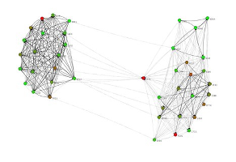

GraphStream Tutorials

Formations JEDI – April 21 2016
Outline
- General Presentation of GraphStream
- First Tutorials
- Community Structures Tutorial (this presentation)
#Community structure We will try to detect community structure in networks.
Intuitively, communities are groups of nodes in a network, where:
- There are more links between nodes from the same community,
- Fewer links between nodes from different communities.

#Community structure Lots of complex networks exhibit community structure.
- Social networks,
- Biological networks,
- Information networks,
- Road networks,
- …

Let’s present a method to detect structures and handle network dynamics.
#Agenda ###In this tutorial we will:
- Try to detect communities inside a network using various tools provided by GraphStream.
- See how to measure the quality of the community structure.
- See a technique to approximate communities detection, and adapt to the network dynamics.
This is not not an academic, but more a way to show you how to combine the various building blocks of GraphStream to experiment on dynamic networks.
#Determining community structure
Most often we use two kinds of criteria:
- Internal validity: some sort of measure indicates the importance of links inside communities compared to links between communities.
- External validity: we rely on an expert, having a knowledge on the network semantics, to validate the communities.
We are focused here in the first one.
#Determining communities
Once we have such a measure, several techniques can be used to find the communities:
- Optimizing the minimum cut: often used for load balancing. The number of communities is known in advance. One search to minimize the number of edges between communities (the cut).
- Hierarchical clustering: uses a similarity measure to group node pairs, in communities, then to group communities.
- Girvan-Newman algorithm: in this algorithm, we remove progressively edges that lie between communities, using some kind of measure to identify them.
- Modularity maximization: The modularity is one of the most used measures. This methods employ various techniques (often metaheuristics) to compute network divisions and maximize modularity.
#Modularity One of the most used measure is the modularity \(Q\).
Intuition: \(Q\) measures the fraction of intra-communities edges minus the same fraction if the network had edges at random (with the same communities divisions). M. E. J. Newman (2006)
- If \(Q=0\) the edges intra-communities is not better than random.
- If \(Q=1\) we have very strong community structure.
- In practice modular network lie between \(Q=0.3\) and \(Q=0.7\).
Modularity gives results in \(\left[-\frac{1}{2} .. 1\right]\).
#Modularity Suppose a given network with modules:
How to determine its modularity ?
#Modularity
We could compare the proportion of internal links \(I_c\) in each community \(c\) to the number of edges \(m\). Links in green \(O_c\) go out of the community \(c\).
\(Q = \sum_c\frac{I_c}{m}~~~~~~~\)
This would not be sufficient, since putting all nodes in the same community would produce a perfectly modular network !
#Modularity
Instead we compare the ratio \(\frac{I_c}{m}\) with the expected value in the same network but with all its links randomly rewired, that is:
\[\frac{(2 I_c + O_c)^2}{(2m)^2}~~~~~~~~\]
\(Q = \sum_c\frac{I_c}{m} - \sum_c\frac{(2 I_c + O_c)^2}{(2m)^2}\)
#Network dynamics?
- Computing the modularity can take some time
- But computing the communities themselves is the most demanding task.
If the network under analysis evolves, it becomes impossible to recompute in real-time the whole modules each time a change occurs in the graph.
#Graph layouts
A novel approach to determine modules uses graph layouts.
- A layout is a mapping of nodes in a space,
- positions are given according to a (aesthetic) criteria.
Most layout algorithms are force based:
- repulsive force among all nodes,
- attractive force between connected nodes.

#The Lin-Log layout
- No aesthetic Layout
- Densely connected nodes are grouped at nearby positions.
- Weakly connected nodes are separated at distant positions.
Most force based algorithms try to the minimize energy.
Lin-Log is based on a \((a,r)\)-energy model.
- \(a\) is the attraction force factor,
- \(r\) the repulsion force factor.
#The Lin-Log layout and network dynamics
After a change in the network the algorithm computes the layout from its previous equilibrium state.
Chances are that reusing previous state costs less than a complete re-computation (c.f. re-optimization).
The Lin-Log layout was proposed by Andreas Noack (2007).
#Practical session
We will see how to:
- Read, layout and display a graph automatically.
- Control the layout directly and change it to a Lin-Log layout.
- Retrieve feedback from the distant view process.
- Compute communities from the Lin-Log layout and display them.
- Retrieve the communities.
- Compute the modularity of these communities.
- Stress the method on a highly dynamic network.
#How GraphStream handles display
GraphStream puts the display of the graph in a separate thread or process or host.
Usually the display will evolve in parallel of the main application running on the graph.
#How GraphStream handles graph layouts
By default the viewer creates another thread to handle the layout. The default Layout algorithm is a derivative of the Frutcherman-Reingold one.